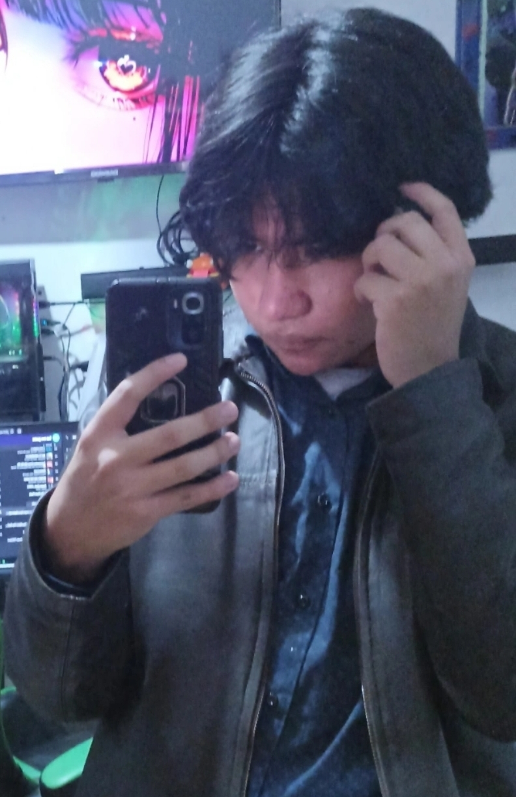

Acerca del Proyecto
Nuestro Equipo
Axel Daniel Cabrera Vera
Estudiante · Emprendimiento e Innovación Programo el arduino, python y la pagina (Solo porque le invitaron de comer)
Rol en el proyecto
Se encargo de programar todo (Lo sobornaron)

Gala Sofia Barrero Landaverde
Estudiante · Emprendimiento e Innovación
Rol en el proyecto
Na' más puso el dinero (lit No sabe nada )

Rafael Lopez Sanchez
Estudiante · Emprendimiento e Innovación
Rol en el proyecto
Hizo el circuito (No sabe programar arduino y python)
Sobre el Proyecto
Idea Principal
Crear un sistema simple y funcional de timbre que permita activar una alarma sonora mediante botones, demostrando los fundamentos de programación en Arduino y electrónica básica, vinculado con Python para crear una interfaz visual para mayor comodidad.
Objetivos
Construir un circuito funcional que integre un microcontrolador Arduino, componentes de entrada (botones) y salida (buzzer), y programarlo correctamente para responder a eventos de usuario.
Aprendizajes
Durante este proyecto aprendí a programar en C/C++, a entender circuitos electrónicos básicos, a debuggear código y a documentar un proyecto técnico de manera profesional.
Mejoras Futuras
Agregar conectividad Wi-Fi mediante un módulo ESP8266, implementar una aplicación móvil para control remoto, y expandir el proyecto con más botones y diferentes tonos de sonido.